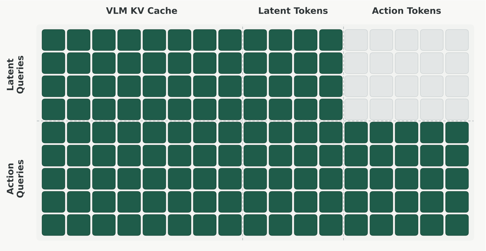
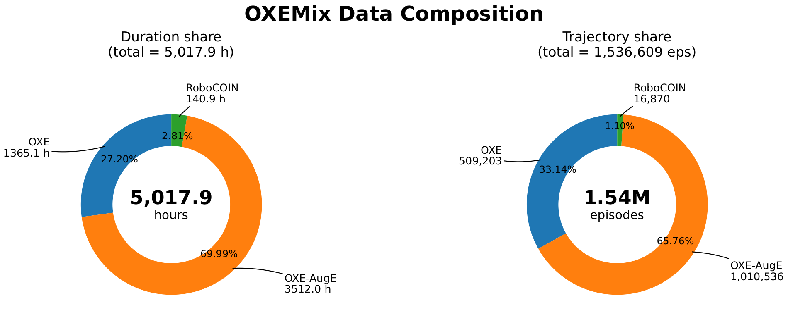
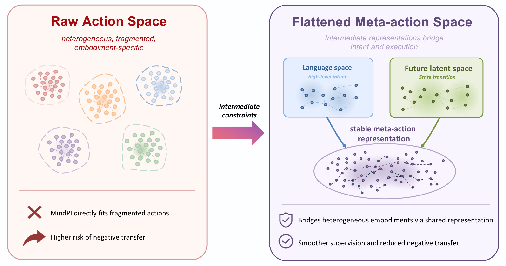

A Unified Training Framework for Vision-Language-Action Models via Co-training and Future Latent Alignment
1Li Auto Inc. 2School of Artificial Intelligence, Beijing University of Posts and Telecommunications 3The Chinese University of Hong Kong, Shenzhen
*Equal contribution †Project leader ‡Corresponding author
Different VLA pre-training paradigms are hard to compare because existing models differ in architecture, data, action space, and evaluation. VLAFlow removes those confounders: it fixes a single π₀-style flow-matching architecture, a shared VLM backbone, one action expert, a unified 14-D action space, and one evaluation protocol — so the only variable is the training supervision signal. Under this controlled setup we compare four paradigms on ~5,000 hours of heterogeneous robot data (OXEMix) and evaluate on LIBERO, LIBERO-Plus, and SimplerEnv.
Key result. Action-only pre-training is fragile on heterogeneous data and can hurt transfer. Language supervision (high-level intent) and future-latent alignment (state transition) are complementary intermediate constraints; combining them (MindLWPI) yields the most stable transfer across all three benchmarks.
VLAFlow is a framework / benchmark, not a single model. “Flow” refers both to the flow-matching action mechanism and to how three supervision signals — low-level actions, language intent, and future latent states — flow into the same action-generation backbone.
Four training objectives compared under one architecture, action space, data mixture, and evaluation protocol — isolating the effect of the training signal itself.
Full-parameter action-only pre-training on heterogeneous data can perform worse than no pre-training; freezing the VLM preserves generalization but under-uses robot data.
Language injects “what to do” (intent); future-latent prediction injects “what the action changes” (state transition). Combined, they smooth heterogeneous action supervision.
Language space and future visual latent space act as intermediate constraints that bridge heterogeneous embodiments into a smoother, more transferable action representation.
All paradigms share the same inputs, backbone, action expert, and downstream control form. They differ only in whether language supervision, future-latent supervision, or both are added. PT = pre-training, FT = fine-tuning.
| Paradigm | Auxiliary supervision | PT loss | FT loss | Main role |
|---|---|---|---|---|
| MindPI | — | L_act | L_act | Action-only transfer baseline |
| MindLPI | language | L_act + λ·L_lang | L_act | Injects high-level action intent via language |
| MindWPI | future latent | L_act + λ·L_lat | L_act + λ·L_lat | Regularizes with future-state prediction |
| MindLWPI | language + future latent | L_act + λ·L_lat + λ·L_lang | L_act + λ·L_lat | Combines intent + state-transition constraints |
Recipe. λ_lang = 0.1 (language loss used in PT only, dropped at FT so control frequency is unaffected); MindWPI/MindLWPI use action:latent = 1:1 during PT and 0.1:1 during FT; MindLPI uses no stop-gradient — the action loss backpropagates into the VLM (ablations show stop-gradient hurts sharply).
x_t = (1−t)·ε + t·a, target velocity a − ε.
A medium-scale, open-source mixture converted to LeRobot format and mapped into the unified 14-D action space. Sources: DROID, OpenX-Embodiment, OpenX-Augmented, and RoboCOIN. Sampling balances dataset scale and trajectory length.

| Source | Duration | Episodes |
|---|---|---|
| OpenX (raw, incl. DROID) | 1,365.1 h (27.2%) | 509,203 (33.1%) |
| OpenX-Augmented | 3,512.0 h (70.0%) | 1,010,536 (65.8%) |
| RoboCOIN | 140.9 h (2.8%) | 16,870 (1.1%) |
| Total | 5,017.9 h | 1,536,609 |
LIBERO is a near-saturated in-distribution check; LIBERO-Plus measures zero-shot robustness; SimplerEnv exposes cross-embodiment transfer. Success rate (%). Green = best in column; tinted rows are our combined method.
| Method | Robot PT | Aux. supervision | LIBERO Avg | LIBERO-Plus | WidowX | RT-1 VM | RT-1 VA |
|---|---|---|---|---|---|---|---|
| No robot-data pre-training | |||||||
| MindPI w/o PT | ✗ | — | 97.0 | 59.9 | 59.6 | 75.7 | 60.4 |
| MindWPI w/o PT | ✗ | future latent | 97.4 | 66.1 | 71.9 | 75.2 | 51.6 |
| Action-only pre-training | |||||||
| MindPI (Frozen VLM) | ✓ | — | 97.2 | 74.9 | 54.4 | 72.7 | 66.0 |
| MindPI (Full PT) | ✓ | — | 97.5 | 68.8 | 65.9 | 68.2 | 55.5 |
| Auxiliary-supervised pre-training | |||||||
| MindLPI | ✓ | language | 97.2 | 72.3 | 65.6 | 74.6 | 59.2 |
| MindWPI | ✓ | future latent | 98.5 | 72.6 | 74.5 | 86.7 | 71.1 |
| MindLWPI | ✓ | language + future latent | 99.1 | 74.8 | 75.5 | 84.4 | 69.8 |
MindPI (Full PT) improves WidowX but degrades on RT-1 → action-only pre-training is unstable. MindWPI gives the strongest RT-1 transfer → future-latent alignment models action outcomes well. MindLWPI is the most stable overall → language and future-latent supervision are complementary.
| Method | Size | RT-1 VM | RT-1 VA | WidowX |
|---|---|---|---|---|
| π₀ | 3B | 58.8 | 56.8 | 27.8 |
| π₀ + FAST | 3B | 61.9 | 60.5 | 39.5 |
| OpenVLA-OFT | 7B | 63.0 | 54.3 | 31.3 |
| SpatialVLA | 4B | 75.1 | 70.7 | 42.7 |
| MemoryVLA | 7B | 77.7 | 72.7 | 71.9 |
| MindWPI (ours) | 4B | 86.7 | 71.1 | 74.5 |
| MindLWPI (ours) | 4B | 84.4 | 69.8 | 75.5 |
Public baselines are absolute-performance references at various model sizes. VLAFlow uses Bridge-only fine-tuning for WidowX and RT-1-only for RT-1. On LIBERO, MindLWPI reaches 99.1 average (99.2 / 99.8 / 99.2 / 98.2 on Spatial / Object / Goal / Long).
Low-dimensional action labels alone struggle to form a stable representation across heterogeneous embodiments, sampling rates, and action definitions. Language (high-level intent) and future latents (state transition) provide complementary intermediate constraints that “flatten” the raw action space into a smoother, more transferable meta-action space.

@article{xia2026vlaflow,
title = {VLAFlow: A Unified Training Framework for Vision-Language-Action
Models via Co-training and Future Latent Alignment},
author = {Xia, Guoyang and Li, Fengfa and Ji, Hongjin and Ren, Lei and
Feng, Fangxiang and Zhan, Kun and Xie, Yan},
journal = {arXiv preprint arXiv:2607.01586},
year = {2026}
}